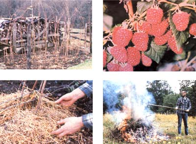

LEFT: During its dormant period, our raspberry patch looks quite lifeless. BELOW. The prunings (and any infected plants) from your bramble garden should always be burned . . . at a goodly distance from the patch itself. BELOW, LEFT: A good, heavy layer of mulch is one of the key ingredients for success in raspberry culture. BOTTOM: Fitting rewards for the berry grower's labors!